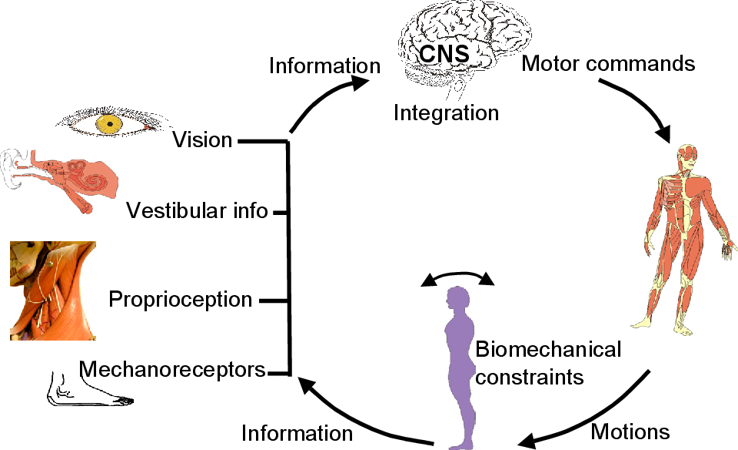
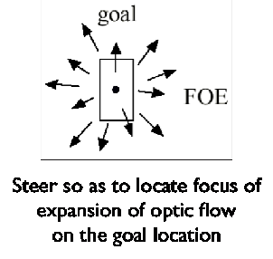
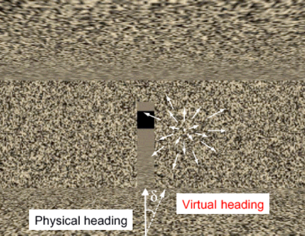

Vision, Posture & Optic Flow
Your wide peripheral vision has a starring role: sensing self-motion. This lesson follows that thread — how vision keeps you balanced, and how the streaming pattern of light steers you through the world.
These interactive lessons were built by Dr. Kuznetsov using AI tools, with extensive input from and review by the instructor, who is responsible for their content and accuracy.
Learning objectives
You should be able to:
- 1Explain the moving-room experiment and what it shows about how vision is prioritized for balance — and how adults differ from infants.
- 2Define optic flow and the focus of expansion, and distinguish forward from backward self-motion.
- 3Describe the perception–action cycle and the principle that action is controlled by moving to achieve a desired perceptual state.
- 4Explain how optic flow is used to steer locomotion (Warren).
The moving room
In a classic experiment (Lee & Aronson, 1974), infants stood inside a room whose walls could slide toward or away from them — but the floor stayed still. Vision said “you’re swaying,” while touch and proprioception said “you’re perfectly still.”
The walls move toward the standing infant, but the floor is solid and still. What do you think the infants did? Jot down your prediction in a sentence or two.
Saved only in your browser, just for you. Jot something down, then continue.
Vision wins
The infants swayed, staggered, and often fell — making unnecessary postural corrections to “catch” a loss of balance that was never happening. Their visual system reported self-motion, and they trusted it over the accurate information from touch and proprioception.
When the senses conflict, vision dominates for standing balance — especially early in development. This is the clearest demonstration that vision is our preferred source of information for motor control.
Lee, D. N., & Aronson, E. (1974). Visual proprioceptive control of standing in human infants. Perception & Psychophysics, 15(3), 529–532.
What about adults?
Adults show the same postural compensation in a moving room — but only when balance is already challenging (e.g., standing on a narrow beam, a small base of support). And unlike infants, adults can modulate the response at will — dialing down their reliance on vision when they choose to.
Same mechanism — imposed optic flow drives a postural response — but with development comes control: adults weight vision against the other senses rather than being driven by it.
Stoffregen, T. A., Hove, P., Schmit, J., & Bardy, B. G. (2006). Voluntary and involuntary postural responses to imposed optic flow. Motor Control, 10(1), 24–33.
Posture is a multisensory process
Why can adults “dial down” vision? Because standing balance isn’t driven by any one sense. The central nervous system (CNS) integrates several streams of information — vision, the vestibular system (inner-ear balance), proprioception (joint & muscle sense), and mechanoreceptors (skin/pressure sense) — then sends motor commands that produce corrective motions, which change the sensory information coming back. It’s a continuous loop.

Because the CNS combines these senses, it can shift how much it trusts each one depending on the situation — leaning on vision when the surface is unstable, or downweighting vision when it’s unreliable (as in the moving room). This flexible reliance is called sensory reweighting, and it’s exactly what adults are doing when they suppress the moving-room response. Keep this idea in mind — it’s the key to the clinical applications later in this lesson.
Why did vision win?
The moving room worked because the sliding walls filled the room with motion across the whole visual field — exactly the signal your peripheral vision is tuned to detect (Lesson 1). Your brain read that whole-field motion as “I am swaying,” and corrected a sway that wasn’t real.
That streaming, whole-field pattern of motion has a name: optic flow. It’s how vision senses your own movement — and, as we’ll see, how it steers you. Let’s look at it directly.
Optic flow
We just named the signal behind the moving room: optic flow. Let’s look at it directly. When you move through the world, the entire scene streams across your retina in a structured pattern — the moving array of light that strikes the retina from all parts of the scene as your point of observation moves through space. Your wide, motion-sensitive peripheral vision is especially tuned to it, and the shape of that flow tells you which way you’re going.
Watch each flow pattern, then flip for what it means.
Watch how the world streams outward from a single point as the camera moves forward. The point things flow away from is exactly where the camera is heading.
The perception–action cycle
Optic flow is one example of a deeper idea. Perception and action form a continuous loop — the perception–action cycle: you perceive, you move, the movement changes what you perceive, and that reshapes the next move.
Action is controlled by moving so as to achieve a desired perceptual state. You don’t compute the world and then act on a model of it — you act to make what you perceive match a goal. This perception–action view is the heart of closed-loop control.
Warren, W. H. (2006). The dynamics of perception and action. Psychological Review, 113(2), 358–389.
Steering locomotion by optic flow
Here is the perception–action cycle in action. To walk toward a target, you don’t calculate a heading angle — you move so the optic flow looks the way it should: you steer to keep the focus of expansion on the goal.
“Steering” doesn’t mean turning a steering wheel — it means directing your own locomotion: walking, running, wheeling, or any self-propelled movement through space. You control where your body goes by adjusting it so the optic flow matches your goal.


Source: Warren et al. (2001), Nature Neuroscience.
It’s direct evidence for the principle on the last page: you achieve the goal by moving to make the perception match (focus of expansion on target), rather than by computing and executing a path. When the optics lie, so does the path.
Warren, W. H., Kay, B. A., Zosh, W. D., Duchon, A. P., & Sahuc, S. (2001). Optic flow is used to control human walking. Nature Neuroscience, 4(2), 213–216.
Clinical relevance: optic flow, posture & sensory reweighting
These aren’t just laboratory ideas. Knowledge of optic flow provides foundational insights into how humans coordinate visuomotor control, navigate physical environments, and adapt postural balance [Bruggeman][Horrocks 2022][Barbanchon 2026]. Read each profession’s scenario, think about the application — then flip the box.
Match each idea to its description
Drag each term onto what it means (or tap one, then tap a target). Place all four to continue.
Placed 0 of 4.
Summary & the next step
- 1Explain the moving-room experiment: vision dominates balance when the senses conflict, and adults can modulate that reliance.
- 2Define optic flow and the focus of expansion, and read forward vs. backward self-motion from the flow pattern.
- 3Describe the perception–action cycle and the steering principle — move so the flow looks the way it should.
Lesson 4 — Two Visual Systems & How We Study Vision’s Role: the vision-for-perception vs. vision-for-action model, the illusion that fools the eye but not the hand, the occlusion methods, and monocular vs. binocular vision.
Your passphrase for this lesson is OPTIC-FLOW. Enter it in the Canvas quiz to record completion.